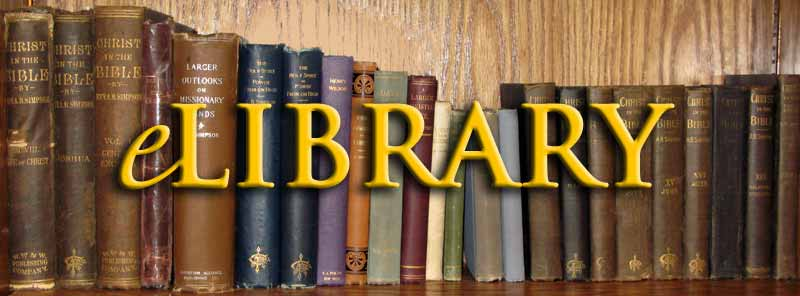

About E-Library
An e-library or Digital library is a physical site and/ or website that provide around the clock online access to digitized audio, video, and written material. It provides free copies of books, journals, etc. available to the users. Normally these materials are classics which have no copyright digital formats (as opposed to print, microform, or other media) and accessible by computers. The digital content may be stored locally, or accessed remotely via computer networks. A digital library is a type of information retrieval system. Digital Libraries are an increasingly popular research area that encompasses more than traditional information retrieval or database methods and techniques.
1. E-library is the easiest to use the available online research tool.
2. Standards searching help the educators to integrate the technology into the curriculum, by increasing the technology literacy.
3. Students can use the search by topic feature to retrieve a manageable amount of quality content, quickly and easily.
4. Public libraries need to offer an easy-to-use research solution to patrons.
5. Point-and-click functionality ensures all the users finding the information they need.
6. The reference desk gives integrated access to a dictionary, encyclopedia, almanacs, and much more.
7. Visually impaired people are no longer disabled in searching and surfing information on the digital library.